How's your memorization?
Try out our memorization game using 2 Raspberry Pi Pico Ws
and wireless communication through UDP!
For our final project, we decided to make a Wi-Fi-based video game inspired by a popular children's game Simon Says. This is a two player game, using both LEDs and buttons in front of the player and also a VGA screen to visually keep track of the game. We chose this final project because we have been exposed to different communication protocols but never had any exposure to Wi-Fi and we believed that this was a cool way to explore it. We specifically used the Raspberry Pi Pico W’s as our microcontroller and used the lwip library to send data via Wi-Fi. This was done with access to this library and using User Datagram Protocol (UDP).
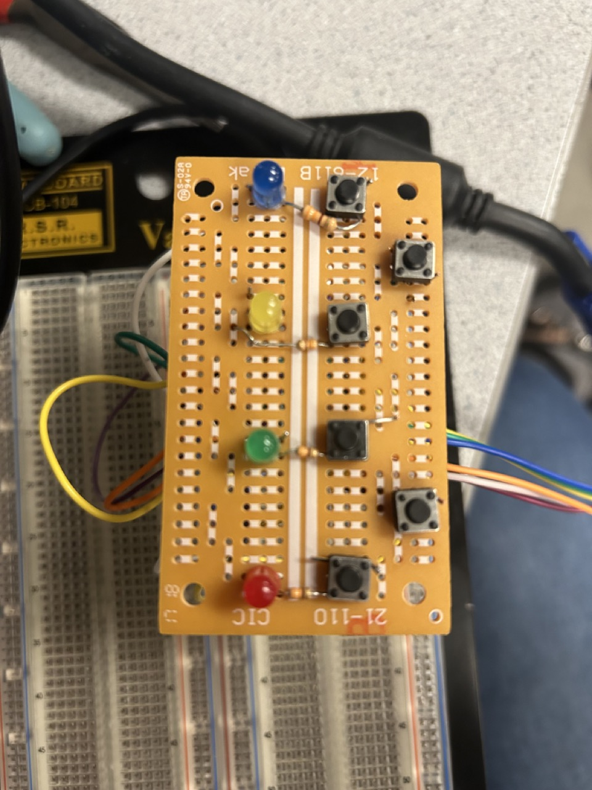The rationale behind Pico Says was to have two Picos to communicate with each other using a sequence of LED lights. Each Pico is connected to 4 LEDs and their corresponding buttons and VGA screen. To pick the playing, either player can press the reset button to go first, or the send button to go second. Player One will press whatever LED of their choice to start the sequence. Player Two will see it on their board and repeat the sequence that they saw and add onto it. This keeps going back and forth until one player messes it up. Each player has three lives before they lose the game. How many lives, the accuracy of the sequence you sent, and whether it is your turn is all displayed on the VGA screen.
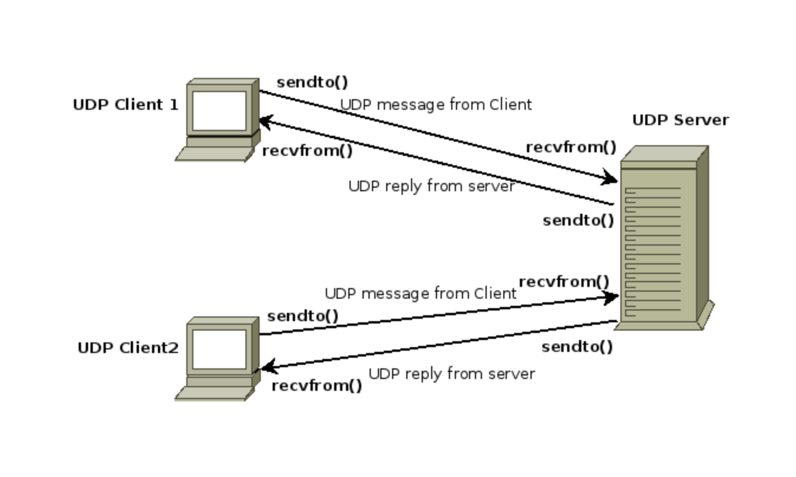There were some software tradeoffs as for the Wi-Fi communication protocol we used was UDP which was a lot easier to implement between the two Picos but had very little error checking so data can sometimes get lost after being sent to each board. The other option was TCP (Transmission Control Protocol) which ensures that the correct data will always be sent and received but it was a lot harder to implement.
From the hardware perspective, we had to switch microcontrollers for the Raspberry Pi Pico to the Raspberry Pi Pico W in order to use the Wi-Fi capabilities. The pinouts of the boards are very similar which made this transition easier. We soldered the four LEDs, their respective buttons, and the REST and SEND buttons to prototype boards
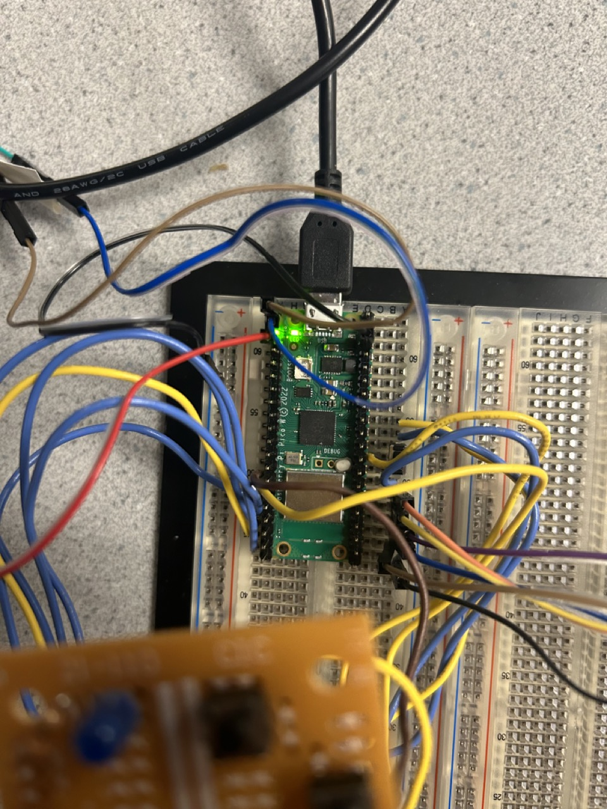As seen above, the order of the LEDs were red, green, and blue. They are each connected to 330 ohm resistors. The bottom two buttons are REST and SEND respectively. REST allows a player to start over if they feel like they made a mistake entering the sequence and once you are done you send the data using SEND. These buttons also double as indicating the play order at the beginning of the game. If you select RESET, you are going first. If you select SEND, you are playing second. Because we are using two Picos, we had to double everything to make sure they looked identical and the wirings were the same.
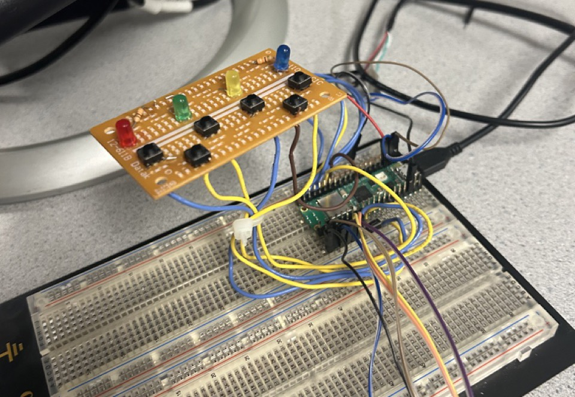Also connected to the Pico W was a VGA screen to show wheter it was a player's turn, how many lives were left and the end game result. The VGA protocol manipulates two digital synchronization pins and three analog color pins (RED, GREEN, and BLUE) One of the synchronization pins, HSYNC, tells the screen when to move to a new row of pixels. The other synchronization pin, VSYNC, tells the screen when to start a new frame. For VGA to work we need send 25MHz red, green, blue signals through the protocol. The state machine initializes counting registers and waits for a signal from the VSYNC state machine to start sending pixel data. When active, it clocks out 640 pixels, outputting 3 bits at a time with the required delays. After a row is complete, it resets and waits for the VSYNC signal. With this protocol, we can now use DMA to communicate pixel data. How this works is that there is a global character array named vga_data_array holds color data for pairs of adjacent pixels. This data is sent to the RGB PIO state machine 8 bits at a time through a DMA channel. The DMA channel is synchronized with the PIO machine using the DREQ_PIO0_TX2 data request signal. Another DMA channel, chained to the first, then resets and reconfigures the first channel. We implement the software by using DMA to send signals for pixel data. Functions for these have been prewritten in the VGA Driver Library, so we just need to use those methods in our code.
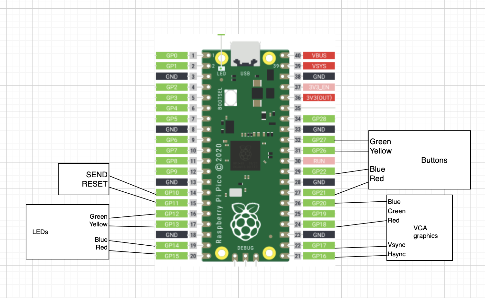Software DesignIn all three labs we were exposed to SPI, UART and I2C as communication protocols. However, all these protocols required the Picos to be wired together. It would be cool to talk and send data without being confined to a single breadboard. Thus, the idea of using Wi-Fi was introduced.
This semester we used the Raspberry Pico as our microcontroller. In order to use Wi-Fi capabilities, we had to move to the Pico W. The pinouts of the boards are very similar. Once we had our board, we learned that Wi-Fi has its variety of ways to communicate data. The two main ones we considered were UDP and TCP. We decided to use UDP because it was easier to implement and we had example code from Instructor Bruce Land to start from.
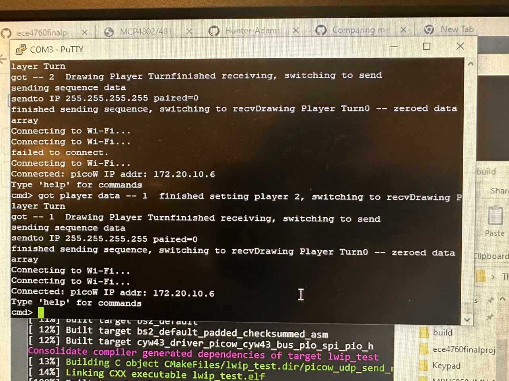As mentioned, we used example code to frame how the code would be organized. We organized our code into 5 threads:
This is how each Pico W sends the sequence the players inputs as an array of integers 1-4
(1 = RED, 2 = GREEN, 3 = YELLOW, 4 = BLUE). It is only used when it is signaled to by the Signals
Thread. The majority of this code was from example code listed in our references.
This takes the incoming sequence from the other picos and translates the array into LED flashes. This thread also checks if the recieved sequence was accuarate before it was added to. The majority of this code was from example code listed in our references.
This thread is a visual way to represenet if the Pico W's are in pairing mode. Since we used a hotspot instead of making one of the Pico's a station. We had to wait from both microcontrollers lights to flicker prior to playing the game otherwise data will not be sent nor recieved. This compatible to the LWIP library
This allowed us to see before we draw anything on the VGA screens if the Picos were effectively communicating with each other. It also ensures they are both connected to the same hotspot. If not data can not be send nor recieved.
This controlled all the button presses and LED flashes based on the inputs from the palyer themselves or that that was received from the other board. It is also where sequences are sent to the UDP send thread using the SEND button or its clear using RESET. The logic behind signal data transmission happened in here.
We designed the app so that there are three different states of the game. This is to simplify the process of knowing what to send, We have a player selection state, a game play state, and an end game state. These three each contribute to how data is manipulated to send the correct data and to know what type of data to receive.
This state is the starting menu for the game. The design for this screen is quite simple as it gives each player an overview of the game, a picture of the hardware that is used to play the game and a quick instruction on how to start the game.
In order to start the game, the player needs to either press to RESET button or SEND button. Player selection is first come first serve, where if one person wants P1 and they press the RESET button, the other player that has not selected a player will be defaulted to P2.
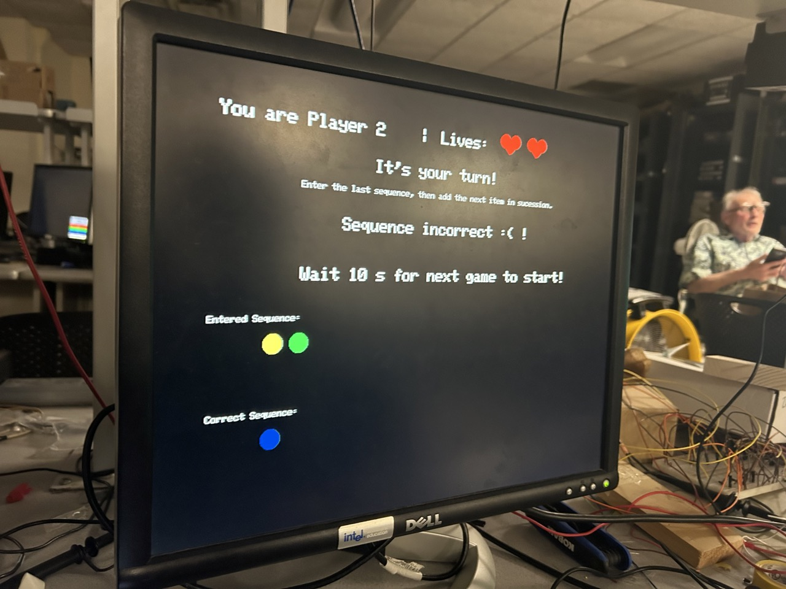The reason for this choice is because we did not want to run into problems where both players wanted to start first. Or a possibility would be to have both players decide beforehand who wants to receive or who wants to send a sequence first. This might be more difficult as we would need to implement a condition or state when both people playing would accidentally both select the same starting player.
As mentioned previously, the udp send and receive sequence is dependent state of the game. In this state of the game, we will still send a sequence but only the first index of the sequence is used. This first index is used to send the correct player number to the other pico. The other pico will then determine which player it is, and which is the other player.
memcpy(otherPlayer, recv_data, send_data_size);
if (otherPlayer == 2) {
player = 1; mode = send;
} else {
player = 2; mode = echo;
}
start_game = true;
Once both players receive the respectful player numbers, we can signal to both picos that the game is ready to start
With a completely new state, we can set start_game = true. This is so that we can change what to check within our sequence. The game state makes it a little more difficult to know what to send or receive. Given the instructions of the game, we need to track quite a few things. Which move each player is on, and what is the most recent sequence that was sent or received.
Given that state tracking within the pico itself might cause complexity issues between which player is moving and which player isn’t, we decided to modify the data sent to account for two instructions: the current move that needs to be played and the entered in sequence. This allows the program to continuously alternate between the players without having to keep track of which move its at. This is important because it tells the player how many moves to make, which should be one more of the length of the last received sequence.
We accomplished this by using the first index to store the move turn and the rest of the data array to store the game sequence. A picture of the udp data array is shown below.
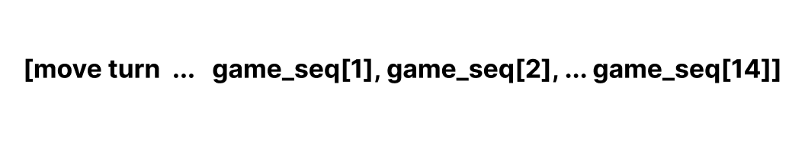The most important part is the game logic as each pico figures out its own sequence. We created helper functions to make the process easier. We have a function called sequenceLED(int seq), so that the receiving player can memorize and enter in the correct sequence.
Another helper function is compare_sequences(const int *seq1, const int *seq2). This helper function helps check whether or not the received sequence is the same as the entered in sequence. Given the entered sequence will always have a length greater than the received sequence, we need to also check the condition whether the sequence[index] is 0. The data array will be initialized with 0s and thats how we’ll know which sequence index to check up to.
Since UDP does not have an acknowledgement system and we ran out of time for TCP/IP, we decided to not send an extra packet just to tell the other player whether we got it correct. Our strategy was again, to use the data array to our advantage. Since move turn is always greater or equal to 1, we can use the first index value to tell the other player whether or not they themselves got the sequence correct. This means that within the background, each pico checks whether its own player entered in the correct corresponding sequence.
for (int i = 0; i < data_size; i++) {
printf("%d ", received_data_obj.sequence[i]);
sequenceLED(received_data_obj.sequence[i]);
}
// i think here we can check if data received shows that the opponent didn't get it correct
if (received_data_obj.sequence[0] == 0) // incorrect sequence {
otherLives--; // reset send sequence memset(send_data, 0,
UDP_MSG_LEN_MAX); memcpy(send_data, data_obj.sequence,
send_data_size);
}
We also need to check whether or not players are clicking or doing the right thing at the right time. With the help of states and another helper function to check the entered in sequence length, we can control what buttons the player can press and when to press it. There’s also a reset button to reset the entered in sequence if you’ve messed up.
We added in a draw heart function to visualize the number of lives each user had left. We used some simple calculation to get the general shape using two circles and a rounded rectangle. With predefined values for radius, width, and height, we were able to position and add in the according shapes to represent a red heart.
Given that each user has 2-3 lives to start with, depending on how the game wants to be played, drawLives use used to space out the hearts for each of the user.
A cool feature we wanted to add in was some sort of visual feature with the VGA screen. Something to tell the players which LED buttons they’ve pressed thus far. This is so that if the game ever gets to a sequence length of 10+, then it’ll help the players out. They might even forget which ones they’ve pressed thus far. HAHA. And we also need an instructional screen to tell which player is supposed to move or receive. All that needs to be done is after every move, we reset the player screen based off of new updated data.
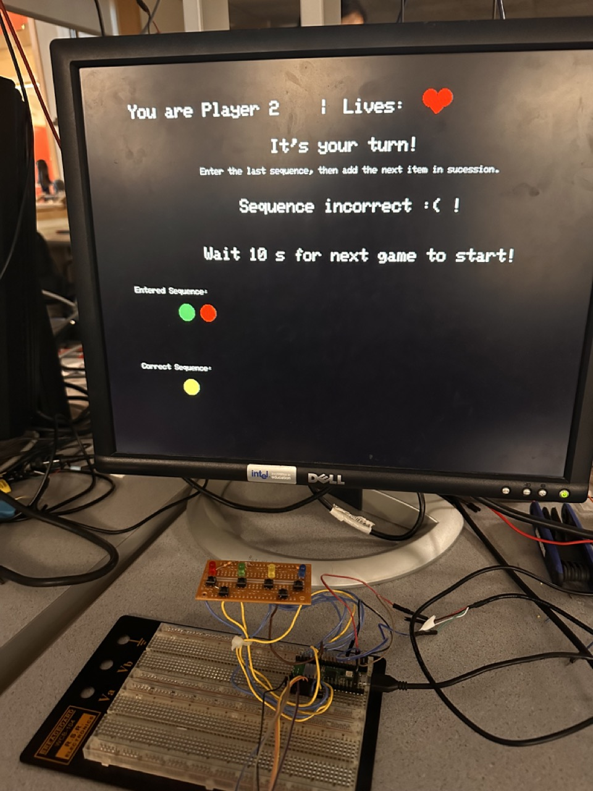The end game state is quite simple as all we need to do is to check when either player’s lives is 0. But how do we know when the other player has 0 lives if we never send that requirement through packets? Well, as mentioned earlier we use the first index to send whether or not a player has entered a correct sequence. Once that incorrect flag is checked, the pico stores the lives of the other player. So, once a player loses all three lives, the player itself knows that it loses and the other player knows that it wins. Both VGA screens will adjust to the corresponding end game screen.
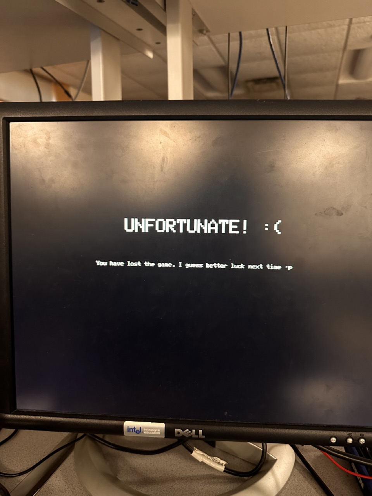Our final project was actually really fun to play! We sat on opposite benches with the VGAs turned away so we could not cheat and played a couple rounds of Pico Says. The biggest issue was the Wi-Fi not sending the data consistently but when it did the game worked very well. It is pretty straightforward, the instructions are on the VGA screen if one were to ever get confused or wondering if their sequence was sent to the other player. When the data was being sent accurately, it was cool to see the LEDs of the different boards light up in correspondence to what was sent. The biggest thing we notice it that our accuarcy was not that good. Even after confirming that the microcontrollers were paired to the same hotspot, sometimes data still would not send but if you refesh the game it would working perfectly fine. We had to make the boards pretty close to the hotspot to enfore udp packets were not getting lost. Also the fact that the lab, which has a lot of desktops, made the enevironemnt noisy and more likely to lose data packets.
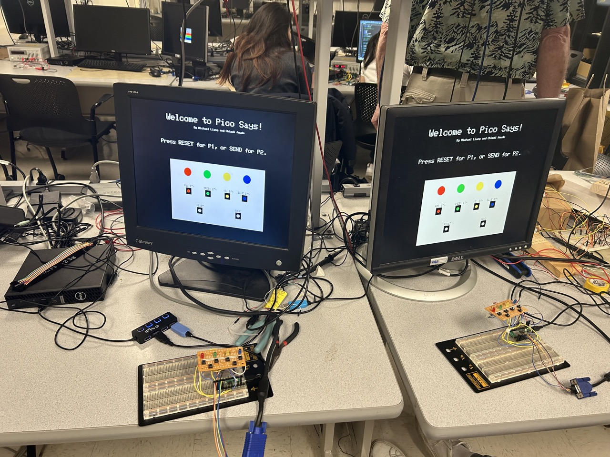
Compared to our final project proposal, we did not meet all our
expectations. We planned on adding sound effects for each button using a DAC, audio
jack and SPI and a timer using an Interrupt Service Routine for each player to increase competition.
However, we did not have enough time to implement the timer and although we did implement
sound effects, we did not have the time to debug and fix it before our
final demo. Figuring out the Wi-Fi capacilies took more time than we planned.
If we could add more to our game, we would have added those features and also having different difficulty levels to
challenge players even more. Even to add more picos/players to the
game to make it more challenging. If we could make more improvements, using a Wi-Fi
protocol that has error checking lessen the likelihood of having data packet loss would be intesting to explore as well.
As for intellectual property consideration, we have not seen any project that resembles our own.
Although we did use some example code, aside from that our code is original and our own and our
project is consistent with IEEE Code of Ethics.
The group approves this report for inclusion on the course website.
The group approves the video for inclusion on the course youtube channel.
#include "hardware/spi.h"
#include "hardware/sync.h"
#include "hardware/gpio.h"
#include "hardware/timer.h"
#include "hardware/uart.h"
#include "stdio.h"
#include "pico/stdlib.h"
#include "pico/cyw43_arch.h"
#include "lwip/pbuf.h"
#include "lwip/udp.h"
#include "lwip/opt.h"
#include "lwip/debug.h"
#include "lwip/stats.h"
#include "lwip/dns.h"
#include "lwip/netif.h"
#include "button.h"
#include "led.h"
#include "vga_graphics.h"
// #include "RED.h"
// #include "BLUE.h"
// #include "GREEN.h"
// #include "YELLOW.h"
// ==================
// SPI configurations
#define PIN_MISO 4
#define PIN_CS 5
#define PIN_SCK 6
#define PIN_MOSI 7
#define LDAC 8
// ======================================
// udp constants
#define UDP_PORT 4444
#define UDP_MSG_LEN_MAX 1024
#define UDP_TARGET_DESK "192.168.1.9" // desktop
#define UDP_TARGET_BROADCAST "255.255.255.255"
// #define UDP_INTERVAL_MS 10 // not used
// should resolve to a actual addr after pairing
char udp_target_pico[20] = "255.255.255.255";
// choose appropriate packet length
enum packet_lengths
{
command,
ack,
data
} packet_length = command;
// =======================================
// necessary to connect to wireless
// !!! Do NOT post this info !!!
#define WIFI_SSID "miko"
#define WIFI_PASSWORD "123456789"
// =======================================
// protothreads and thread communication
#include "pt_cornell_rp2040_v1_1_2.h"
char recv_data[UDP_MSG_LEN_MAX];
char send_data[UDP_MSG_LEN_MAX];
// payload to led blink
// or send to remote system///////////////////
int blink_time, remote_blink_time;
// interthread communicaition
// signal threads for sned/recv data
struct pt_sem new_udp_recv_s, new_udp_send_s;
// mode: send/echo
// send mode is in chage here, defined by seril input
// both units default to echo
#define echo 0
#define send 1
int mode = echo;
// did the addresses get set up?
int paired = false;
// data to send over WIFI
#define max_data_size 16
int data_size = 16;
#define SEQUENCE_LENGTH 16
#define MAX_SEQUENCE_LENGTH 32
#define DEBOUNCE_TIME 500
struct PSData
{
int player;
int sequence[SEQUENCE_LENGTH];
int lives;
};
struct PSData data_obj;
struct PSData received_data_obj;
int moveSequence;
uint8_t player;
int otherPlayer;
// while loop to check and wait until game starts
bool start_game = false;
bool end_game = false;
bool your_turn;
enum LEDPinMap
{
RED_LED = 1,
BLUE_LED = 4,
YELLOW_LED = 3,
GREEN_LED = 2
};
bool playerWon = false;
bool otherPlayerWon = false;
// the following MUST be less than or equal to:
// UDP_MSG_LEN_MAX
// but for efficiency, not much smaller
#define send_data_size data_size * sizeof(short)
// record time for packet speed determination
uint64_t time1;
//==================================================
// UDP async receive callback setup
// NOTE that udpecho_raw_recv is triggered by a signal
// directly from the LWIP package -- not from your code
// this callback juswt copies out the packet string
// and sets a "new data" semaphore
// This runs in an ISR -- KEEP IT SHORT!!!
#if LWIP_UDP
static struct udp_pcb *udpecho_raw_pcb;
struct pbuf *p;
static void
udpecho_raw_recv(void *arg, struct udp_pcb *upcb, struct pbuf *p,
const ip_addr_t *addr, u16_t port)
{
LWIP_UNUSED_ARG(arg);
if (p != NULL)
{
// printf("p payload in call back: = %s\n", p->payload);
memcpy(recv_data, p->payload, UDP_MSG_LEN_MAX);
// can signal from an ISR -- BUT NEVER wait in an ISR
PT_SEM_SIGNAL(pt, &new_udp_recv_s);
/* free the pbuf */
pbuf_free(p);
}
else
printf("NULL pt in callback");
}
// ===================================
// Define the recv callback
void udpecho_raw_init(void)
{
udpecho_raw_pcb = udp_new_ip_type(IPADDR_TYPE_ANY);
p = pbuf_alloc(PBUF_TRANSPORT, UDP_MSG_LEN_MAX + 1, PBUF_RAM);
if (udpecho_raw_pcb != NULL)
{
err_t err;
// netif_ip4_addr returns the picow ip address
err = udp_bind(udpecho_raw_pcb, netif_ip4_addr(netif_list), UDP_PORT); // DHCP addr
if (err == ERR_OK)
{
udp_recv(udpecho_raw_pcb, udpecho_raw_recv, NULL);
// printf("Set up recv callback\n");
}
else
{
printf("bind error");
}
}
else
{
printf("udpecho_raw_pcb error");
}
}
#endif /* LWIP_UDP */
// end recv setup
// =======================================
// UDP send thead
// sends data when signalled
// =======================================
void sequenceLED(int seq)
{
switch (seq)
{
case (RED_LED):
light_led(RED_LED_PIN);
break;
case (GREEN_LED):
light_led(GREEN_LED_PIN);
break;
case (YELLOW_LED):
light_led(YELLOW_LED_PIN);
break;
case (BLUE_LED):
light_led(BLUE_LED_PIN);
break;
};
sleep_ms(500);
}
bool compare_sequences(const int *seq1, const int *seq2)
{
for (int i = 1; i < SEQUENCE_LENGTH; i++)
{
if (seq1[i] != seq2[i] && seq1[i] != 0 && seq2[i] != 0)
{
return false;
}
}
return true;
}
int getSequenceLength(const int *seq)
{
int length = 0;
// first index in data obj defines the move count
for (int i = 1; i < MAX_SEQUENCE_LENGTH; i++)
{
if (seq[i] == 0)
{
return length;
}
length++;
}
return length;
}
#define INITIAL_LIVES 2
static int lives = INITIAL_LIVES;
static int otherLives = INITIAL_LIVES;
char screentext[80];
char movetext[80];
void drawEndingScreen() {
fillRect(0,0,760,600, BLACK);
if (playerWon) {
setCursor(225, 150);
setTextSize(3);
writeString("CONGRATS!");
setTextSize(1);
setCursor(115, 220);
writeString("You have won the game and are officially a Pico Says WIZARD!");
} else if (otherPlayerWon) {
setCursor(200, 150);
setTextSize(3);
writeString("UNFORTUNATE! :(");
setTextSize(1);
setCursor(150, 220);
writeString("You have lost the game. I guess better luck next time :p");
}
}
void drawPlayerTurn() {
fillRect(100, 80, 600, 100, BLACK);
setTextSize(2);
setCursor(240, 80);
setTextColor(WHITE);
printf("Drawing Player Turn");
if (your_turn) {
writeString("It's your turn!");
setCursor(150, 110);
setTextSize(1);
writeString("Enter the last sequence, then add the next item in sucession.");
setCursor(140, 160);
setTextSize(1);
if (moveSequence == 1) {
sprintf(movetext, "Make the first move!");
} else if (moveSequence == 2) {
sprintf(movetext, "Make one move and another new move");
} else {
sprintf(movetext, "Make %d moves and another new move.", moveSequence - 1);
}
writeString(movetext);
} else {
writeString("You're receiving!");
setCursor(180, 110);
setTextSize(1);
writeString("Wait for the other player to enter the sequence!");
}
}
void drawEnteredSequence(const int *seq) {
fillRect(50, 250, 400, 100, BLACK);
setTextSize(1);
setCursor(50, 250);
writeString("Entered Sequence: ");
int len =getSequenceLength(seq);;
for (int i=0; i < len; i++) {
int seqValue = data_obj.sequence[i + 1];
if (seqValue != 0) {
char color = seqValue == 1 ? RED : seqValue == 2 ? GREEN : seqValue == 3 ? YELLOW : BLUE;
fillCircle((i * 30) + 120, 280, 10, color);
}
}
}
void drawCorrectSequence(const int *seq) {
fillRect(50, 350, 400, 100, BLACK);
setTextSize(1);
setCursor(50, 350);
writeString("Correct Sequence: ");
int len =getSequenceLength(seq);;
for (int i=0; i < len; i++) {
int seqValue = seq[i + 1];
if (seqValue != 0) {
char color = seqValue == 1 ? RED : seqValue == 2 ? GREEN : seqValue == 3 ? YELLOW : BLUE;
fillCircle((i * 30) + 120, 380, 10, color);
}
}
}
void drawPlayerScreen() {
fillRect(0,0,760,600, BLACK);
setTextColor(WHITE);
setCursor(60, 40);
setTextSize(2);
sprintf(screentext, "You are Player %d |", player);
writeString(screentext);
drawLives(lives, 430, 40);
}
void drawLoadingScreen()
{
fillRect(0,0,760,600, BLACK);
setCursor(130, 40);
setTextSize(3);
setTextColor(WHITE);
writeString("Welcome to Pico Says!\n\r");
setCursor(240, 75);
setTextSize(1);
writeString("By Michael Liang and Chimdi Anude\n\r");
setTextSize(2);
setCursor(105, 130);
writeString("Press RESET for P1, or SEND for P2.\n\r");
// =======================
fillRect(140, 200, 380, 230, WHITE); // breadboard
fillCircle(210, 240, 15, RED);
fillCircle(290, 240, 15, GREEN);
fillCircle(370, 240, 15, YELLOW);
fillCircle(450, 240, 15, BLUE);
setTextColor(BLACK);
setTextSize(1);
setCursor(195, 290);
writeString("RED BTN");
setCursor(275, 290);
writeString("GREEN BTN");
setCursor(355, 290);
writeString("YEL BTN");
setCursor(415, 290);
writeString("BLUE BTN");
fillRect(200, 300, 25, 25, BLACK); // buttons
fillRect(280, 300, 25, 25, BLACK);
fillRect(360, 300, 25, 25, BLACK);
fillRect(430, 300, 25, 25, BLACK);
fillCircle(212, 312, 5, RED);
fillCircle(292, 312, 5, GREEN);
fillCircle(372, 312, 5, YELLOW);
fillCircle(442, 312, 5, BLUE);
setCursor(245, 360);
writeString("RESET\n\r");
setCursor(405, 360);
writeString("SEND\n\r");
fillRect(245, 370, 25, 25, BLACK); // reset
fillRect(405, 370, 25, 25, BLACK); // send
fillCircle(257, 382, 5, WHITE);
fillCircle(417, 382, 5, WHITE);
}
// =======================================
// UDP send thead
// sends data when signalled
// =======================================
static PT_THREAD(protothread_udp_send(struct pt *pt))
{
PT_BEGIN(pt);
static struct udp_pcb *pcb;
pcb = udp_new();
pcb->remote_port = UDP_PORT;
pcb->local_port = UDP_PORT;
static ip_addr_t addr;
// ipaddr_aton(UDP_TARGET, &addr);
static int counter = 0;
while (true)
{
// stall until there is actually something to send
PT_SEM_WAIT(pt, &new_udp_send_s);
// in paired mode, the two picos talk just to each other
// before pairing, the echo unit talks to the laptop
if (mode == echo)
{
if (paired == true)
{
ipaddr_aton(udp_target_pico, &addr);
}
else
{
ipaddr_aton(UDP_TARGET_DESK, &addr);
}
}
// broadcast mode makes sure that another pico sees the packet
// to sent an address and for testing
else if (mode == send)
{
if (paired == true)
{
ipaddr_aton(udp_target_pico, &addr);
}
else
{
ipaddr_aton(UDP_TARGET_BROADCAST, &addr);
}
}
// get the length specified by another thread
int udp_send_length;
switch (packet_length)
{
case command:
udp_send_length = 32;
break;
case data:
udp_send_length = send_data_size;
break;
case ack:
udp_send_length = 5;
break;
}
// actual data-send
struct pbuf *p = pbuf_alloc(PBUF_TRANSPORT, udp_send_length + 1, PBUF_RAM);
char *req = (char *)p->payload;
memset(req, 0, udp_send_length + 1); //
memcpy(req, send_data, udp_send_length);
//
err_t er = udp_sendto(pcb, p, &addr, UDP_PORT); // port
printf("UDP Packet results: %d\n",er);
pbuf_free(p);
// if (er != ERR_OK)
// {
// printf("Failed to send UDP packet! error=%d", er);
// }
// else
// {
// // printf("Sent packet %d\n", counter);
// counter++;
// }
// this is to attempt to make sure data always gets sent through, if not attempt to resend data...
while (er != 0) {
// actual data-send
struct pbuf *p = pbuf_alloc(PBUF_TRANSPORT, udp_send_length + 1, PBUF_RAM);
char *req = (char *)p->payload;
memset(req, 0, udp_send_length + 1); //
memcpy(req, send_data, udp_send_length);
//
er = udp_sendto(pcb, p, &addr, UDP_PORT); // port
pbuf_free(p);
}
}
PT_END(pt);
}
// ==================================================
// udp recv processing
// ==================================================
static PT_THREAD(protothread_udp_recv(struct pt *pt))
{
PT_BEGIN(pt);
static char arg1[32], arg2[32], arg3[32], arg4[32];
static char *token;
// data structure for interval timer
// PT_INTERVAL_INIT() ;
while (1)
{
// wait for new packet
// signalled by LWIP receive ISR
PT_SEM_WAIT(pt, &new_udp_recv_s);
// parse command
token = strtok(recv_data, " ");
strcpy(arg1, token);
token = strtok(NULL, " ");
strcpy(arg2, token);
token = strtok(NULL, " ");
strcpy(arg3, token);
token = strtok(NULL, " ");
strcpy(arg4, token);
// is this a pairing packet (starts with IP)
// if so, parse address
// process packet to get time
if (strcmp(arg1, "IP") == 0)
{
if (mode == echo)
{
// if I'm the echo unit, grab the address of the other pico
// for the send thread to use
strcpy(udp_target_pico, arg2);
//
paired = true;
// then send back echo-unit address to send-pico
memset(send_data, 0, UDP_MSG_LEN_MAX);
sprintf(send_data, "IP %s", ip4addr_ntoa(netif_ip4_addr(netif_list)));
packet_length = command;
// local effects
printf("sent back IP %s\n\r", ip4addr_ntoa(netif_ip4_addr(netif_list)));
blink_time = 500;
// tell send threead
PT_SEM_SIGNAL(pt, &new_udp_send_s);
PT_YIELD(pt);
}
else
{
// if I'm the send unit, then just save for future transmit
strcpy(udp_target_pico, arg2);
}
} // end if(strcmp(arg1,"IP")==0)
// is it ack packet ?
else if (strcmp(arg1, "ack") == 0)
{
if (mode == send)
{
// print a long-long 64 bit int
printf("%lld usec ack\n\r", PT_GET_TIME_usec() - time1);
}
if (mode == echo)
{
memset(send_data, 0, UDP_MSG_LEN_MAX);
sprintf(send_data, "ack");
packet_length = ack;
// tell send threead
PT_SEM_SIGNAL(pt, &new_udp_send_s);
PT_YIELD(pt);
}
}
// if not a command, then unformatted data
else if (mode == echo)
{
// get the binary array depending on game state
if (start_game)
{
memcpy(received_data_obj.sequence, recv_data, send_data_size);
// send timing ack
memset(send_data, 0, UDP_MSG_LEN_MAX);
sprintf(send_data, "ack");
packet_length = ack;
// tell send threead
PT_SEM_SIGNAL(pt, &new_udp_send_s);
PT_YIELD(pt);
// print received data
// i think here we can check if data received shows that the opponent didn't get it correct
if (received_data_obj.sequence[0] == 0) // incorrect sequence
{
printf("got incorrect sequence from other player");
otherLives--; // tracker to know when game has ended!
// reset send sequence
//reset sequence
// reset the received sequence as well
for (int i = 1; i < 16; i++)
{
data_obj.sequence[i] = 0;
received_data_obj.sequence[i] = 0;
}
if (otherLives == 0) {
playerWon = true;
end_game = true;
start_game = false;
drawEndingScreen();
} else {
mode = send;
your_turn = true;
moveSequence = 1;
data_obj.sequence[0] = moveSequence; // initialize moveSequence
//other player entered data incorrectly but redraw screen
drawPlayerScreen();
drawPlayerTurn();
}
} else {
printf("got -- ");
for (int i = 1; i < 16; i++)
{
if (received_data_obj.sequence[i] !=0) {
printf("%d ", received_data_obj.sequence[i]);
if (received_data_obj.sequence[i] == 1) {
light_led(RED_LED_PIN);
} else if (received_data_obj.sequence[i] == 2) {
light_led(GREEN_LED_PIN);
} else if (received_data_obj.sequence[i] == 3) {
light_led(YELLOW_LED_PIN);
} else if (received_data_obj.sequence[i] == 4) {
light_led(BLUE_LED_PIN);
}
sleep_ms(500);
}
}
// regardless we need to switch roles and send data
mode = send;
your_turn = true;
moveSequence++; // add move sequence
data_obj.sequence[0] = moveSequence;
drawPlayerTurn();
// set to send mode
printf("finished receiving, switching to send");
}
}
else // game hasn't started yet and need to determine who is player 1 and player 2
{
memcpy(received_data_obj.sequence, recv_data, send_data_size);
// send timing ack
memset(send_data, 0, UDP_MSG_LEN_MAX);
sprintf(send_data, "ack");
packet_length = ack;
// tell send threead
PT_SEM_SIGNAL(pt, &new_udp_send_s);
PT_YIELD(pt);
printf("got player data -- ");
// print received data
printf("%d ", received_data_obj.sequence[0]);
otherPlayer = received_data_obj.sequence[0];
if (otherPlayer == 2)
{
player = 1;
your_turn = true;
printf("finished setting player 1, switching to send");
mode = send;
start_game = true;
}
else if (otherPlayer == 1)
{
player = 2;
your_turn = false;
printf("finished setting player 2, switching to recv");
mode = echo;
start_game = true;
}
if (start_game) {
drawPlayerScreen(); // draws screen for player on receiving player communication end
drawPlayerTurn();
}
}
printf("\n\r");
}
// NEVER exit while
} // END WHILE(1)
PT_END(pt);
} // recv thread
// ==================================================
// toggle cyw43 LED
// this is really just a test of multitasking
// compatability with LWIP
// but also reads out pair status
// ==================================================
static PT_THREAD(protothread_toggle_cyw43(struct pt *pt))
{
PT_BEGIN(pt);
static bool LED_state = false;
//
// data structure for interval timer
PT_INTERVAL_INIT();
// set some default blink time
blink_time = 100;
// echo the default time to udp connection
// PT_SEM_SIGNAL(pt, &new_udp_send_s) ;
while (1)
{
// force a context switch of there is data to send
if (&new_udp_send_s.count)
PT_YIELD(pt);
//
LED_state = !LED_state;
// the onboard LED is attached to the wifi module
cyw43_arch_gpio_put(CYW43_WL_GPIO_LED_PIN, LED_state);
// blink time is modifed by the udp recv thread
PT_YIELD_INTERVAL(blink_time * 1000);
//
// NEVER exit while
} // END WHILE(1)
PT_END(pt);
} // blink thread
// =================================================
// command thread
// =================================================
static PT_THREAD(protothread_serial(struct pt *pt))
{
PT_BEGIN(pt);
static char cmd[16], arg1[16], arg2[16], arg3[16], arg4[16], arg5[16], arg6[16];
static char *token;
//
printf("Type 'help' for commands\n\r");
while (1)
{
// the yield time is not strictly necessary for protothreads
// but gives a little slack for the async processes
// so that the output is in the correct order (most of the time)
PT_YIELD_usec(100000);
// print prompt
sprintf(pt_serial_out_buffer, "cmd> ");
// spawn a thread to do the non-blocking write
serial_write;
// spawn a thread to do the non-blocking serial read
serial_read;
// tokenize
token = strtok(pt_serial_in_buffer, " ");
strcpy(cmd, token);
token = strtok(NULL, " ");
strcpy(arg1, token);
token = strtok(NULL, " ");
strcpy(arg2, token);
token = strtok(NULL, " ");
strcpy(arg3, token);
token = strtok(NULL, " ");
strcpy(arg4, token);
token = strtok(NULL, " ");
strcpy(arg5, token);
token = strtok(NULL, " ");
strcpy(arg6, token);
// parse by command
if (strcmp(cmd, "help") == 0)
{
// commands
printf("set mode [send, recv]\n\r");
printf("send \n\r");
printf("pair \n\r");
printf("ack \n\r");
// printf("data array_size \n\r");
//
// need start data and end data commands
}
// set the unit mode
else if (strcmp(cmd, "set") == 0)
{
if (strcmp(arg1, "recv") == 0)
{
mode = echo;
// zeros the array to make sure the data is
// actually sent!
memset(send_data, 0, sizeof(data_obj.sequence));
printf("%d -- zeroed data array \n\r", data_obj.sequence[15]);
}
else if (strcmp(arg1, "send") == 0)
mode = send;
else
printf("bad mode");
// printf("%d\n", mode);
}
// else if(strcmp(cmd,"data")==0){
// sscanf(arg1, "%d", data_array+1);
//}
// identify other pico on the same subnet
else if (strcmp(cmd, "pair") == 0)
{
if (mode == send)
{
// broadcast sender's IP addr
memset(send_data, 0, UDP_MSG_LEN_MAX);
sprintf(send_data, "IP %s", ip4addr_ntoa(netif_ip4_addr(netif_list)));
packet_length = command;
PT_SEM_SIGNAL(pt, &new_udp_send_s);
// diagnostics:
printf("send IP %s\n", ip4addr_ntoa(netif_ip4_addr(netif_list)));
// boradcast until paired
printf("sendto IP %s\n", udp_target_pico);
// probably shoulld be some error checking here
paired = true;
}
else
printf("No pairing in recv mode -- set send\n");
}
// send ack packet
else if (strcmp(cmd, "ack") == 0)
{
if (mode == send)
{
memset(send_data, 0, UDP_MSG_LEN_MAX);
sprintf(send_data, "ack");
packet_length = ack;
time1 = PT_GET_TIME_usec();
PT_SEM_SIGNAL(pt, &new_udp_send_s);
// yield so that send thread gets faster access
PT_YIELD(pt);
}
else
printf("No ack in recv mode -- set send\n");
}
// no valid command
else
printf("Huh? Type help. \n\r");
// NEVER exit while
} // END WHILE(1)
PT_END(pt);
}
// Thread to handle button presses and signal data transmission
static PT_THREAD(protothread_signal_button(struct pt *pt))
{
PT_BEGIN(pt);
while (1)
{
if (mode == send && start_game && !end_game)
{
bool send_signal = false;
int sequenceLength = getSequenceLength(data_obj.sequence);
// Check for button press with debouncing
if (current_time - last_button_press_time > DEBOUNCE_TIME)
{
*/
// if player already entered move then they cannot move again
// either reset or send signal
if (sequenceLength < moveSequence) {
if (gpio_get(RED_BUTTON_PIN) == 0 )
{
data_obj.sequence[sequenceLength + 1] = 1;
light_led(RED_LED_PIN);
drawEnteredSequence(data_obj.sequence);
//redSound();
}
else if (gpio_get(GREEN_BUTTON_PIN) == 0)
{
data_obj.sequence[sequenceLength + 1] = 2;
light_led(GREEN_LED_PIN);
drawEnteredSequence(data_obj.sequence);
//greenSound();
}
else if (gpio_get(YELLOW_BUTTON_PIN) == 0)
{
data_obj.sequence[sequenceLength + 1] = 3;
light_led(YELLOW_LED_PIN);
drawEnteredSequence(data_obj.sequence);
//yellowSound();
}
else if (gpio_get(BLUE_BUTTON_PIN) == 0)
{
data_obj.sequence[sequenceLength + 1] = 4;
light_led(BLUE_LED_PIN);
drawEnteredSequence(data_obj.sequence);
//blueSound();
}
}
// Check for the state of the reset and send buttons
if (gpio_get(RESET_BUTTON) == 0)
{
for (int i = 1; i < 16; i++)
{
data_obj.sequence[i] = 0;
}
drawEnteredSequence(data_obj.sequence); // reset drawn player sequence
}
else if (gpio_get(SEND_BUTTON) == 0)
{
// Allow the data to be sent but check sequence length first
sequenceLength = getSequenceLength(data_obj.sequence);
if (moveSequence == sequenceLength) { // moves eqs sequence so there aren't extra sent
send_signal = true;
moveSequence++;
data_obj.sequence[0] = moveSequence;
drawEnteredSequence(data_obj.sequence); // update player sequence
}
}
// Only proceed to send data if a button has been clicked
if (send_signal)
{
bool seqSame = true;
for (int i = 1; i < 16; i++)
{
if (data_obj.sequence[i] != received_data_obj.sequence[i]
&& data_obj.sequence[i] != 0 && received_data_obj.sequence[i] != 0)
{
seqSame = false;
}
}
// once sequence is added, check itself whether it sent the right seq
if (!seqSame)
{
printf("sequence different");
lives--;
moveSequence = 1; // reset move sequence
printf("lost life\n");
fillRect(50, 135, 600, 90, BLACK);
setCursor(200, 145);
setTextSize(2);
writeString("Sequence incorrect :( ! ");
drawCorrectSequence(received_data_obj.sequence);
setCursor(150, 200);
setTextSize(2);
writeString("Wait 10 s for next game to start!");
sleep_ms(10000);
if (lives == 0) {
end_game = true;
otherPlayerWon = true;
playerWon = false;
start_game = false;
drawEndingScreen();
} else {
drawPlayerScreen(); // reset screen
drawPlayerTurn();
}
data_obj.sequence[0] = 0; // signal that entered incorrectly
}
else {
fillRect(50, 145, 400, 80, BLACK);
setCursor(180, 170);
setTextSize(2);
writeString("Sequence correct :) ! ");
sleep_ms(3000);
fillRect(50, 145, 400, 80, BLACK);
}
printf("sending sequence data\n");
mode = send; // ensure in send mode
// send the big data array
memset(send_data, 0, UDP_MSG_LEN_MAX);
memcpy(send_data, data_obj.sequence, send_data_size);
packet_length = data;
// test pairing
printf("sendto IP %s paired=%d\n", udp_target_pico, paired);
// trigger send threead
PT_SEM_SIGNAL(pt, &new_udp_send_s);
PT_YIELD(pt);
printf("finished sending sequence, switching to recv");
// reset sequence so that memorization starts
for (int i = 1; i < 16; i++)
{
data_obj.sequence[i] = 0;
received_data_obj.sequence[i] = 0;
}
if (!end_game) {
drawEnteredSequence(data_obj.sequence); // reset drawn player sequence
mode = echo;
your_turn = false;
drawPlayerTurn();
memset(send_data, 0, sizeof(data_obj.sequence));
printf("%d -- zeroed data array \n\r", data_obj.sequence[15]);
}
}
}
else if (start_game == false && end_game == false)
{
if (gpio_get(RESET_BUTTON) == 0)
{
printf("reset button pressed - player 1\n");
sleep_ms(1000);
start_game = true;
printf("starting game\n");
// reset send data array
memset(send_data, 0, 4);
printf("zeroed data array \n\r");
mode = send; // ensure in send mode
// send the big data array
memset(send_data, 0, UDP_MSG_LEN_MAX);
data_obj.sequence[0] = 1;
memcpy(send_data, data_obj.sequence, send_data_size);
player = 1;
your_turn = true;
packet_length = data;
// test pairing
printf("sendto IP %s paired=%d\n", udp_target_pico, paired);
PT_SEM_SIGNAL(pt, &new_udp_send_s);
PT_YIELD(pt);
}
else if (gpio_get(SEND_BUTTON) == 0)
{
printf("send button pressed - player 2\n");
start_game = true;
printf("starting game\n");
sleep_ms(1000);
// reset send data array
memset(send_data, 0, 4);
printf("zeroed data array \n\r");
mode = send; // ensure in send mode
// send the big data array
memset(send_data, 0, UDP_MSG_LEN_MAX);
data_obj.sequence[0] = 2;
memcpy(send_data, data_obj.sequence, send_data_size);
player = 2;
your_turn = false;
packet_length = data;
// test pairing
printf("sendto IP %s paired=%d\n", udp_target_pico, paired);
// trigger send threead
// given this pico selected p2 then we need to change it to recv mode
PT_SEM_SIGNAL(pt, &new_udp_send_s);
PT_YIELD(pt);
mode = echo;
}
if (start_game) {
drawPlayerScreen();
drawPlayerTurn();
}
}
PT_YIELD(pt);
}
PT_END(pt);
}
// ====================================================
int main()
{
// =======================
// init the serial
stdio_init_all();
initVGA();
setTextColor(WHITE);
setTextSize(1);
drawLoadingScreen();
//init buttons and leds
init_buttons();
init_leds();
// =====================================
// initizalize the DAC and SPI
//
spi_init(SPI_PORT, 20000000);
spi_set_format(SPI_PORT, 16, 0, 0, 0);
gpio_set_function(PIN_MISO, GPIO_FUNC_SPI);
gpio_set_function(PIN_SCK, GPIO_FUNC_SPI);
gpio_set_function(PIN_MOSI, GPIO_FUNC_SPI);
gpio_set_function(PIN_CS, GPIO_FUNC_SPI);
gpio_init(LDAC);
gpio_set_dir(LDAC, GPIO_OUT);
gpio_put(LDAC, 0);
// =======================
// init the wifi network
if (cyw43_arch_init())
{
printf("failed to initialise\n");
return 1;
}
// hook up to local WIFI
cyw43_arch_enable_sta_mode();
// power managment
// cyw43_wifi_pm(&cyw43_state, CYW43_DEFAULT_PM & ~0xf);
printf("Connecting to Wi-Fi...\n");
if (cyw43_arch_wifi_connect_timeout_ms(WIFI_SSID, WIFI_PASSWORD, CYW43_AUTH_WPA2_AES_PSK, 30000))
{
printf("failed to connect.\n");
return 1;
}
else
{
// optional print addr
printf("Connected: picoW IP addr: %s\n", ip4addr_ntoa(netif_ip4_addr(netif_list)));
}
//============================
// set up UDP recenve ISR handler
udpecho_raw_init();
data_obj.sequence[0] = 0;
moveSequence = 1;
PT_SEM_INIT(&new_udp_send_s, 0);
PT_SEM_INIT(&new_udp_recv_s, 0);
// printf("Starting threads\n") ;
// note that the ORDER of adding the threads is
// important here for perfromance with the async
// WIFI interface
pt_add_thread(protothread_udp_recv);
pt_add_thread(protothread_udp_send);
pt_add_thread(protothread_toggle_cyw43);
pt_add_thread(protothread_serial);
pt_add_thread(protothread_signal_button);
//
// === initalize the scheduler ===============
pt_schedule_start;
cyw43_arch_deinit();
return 0;
}